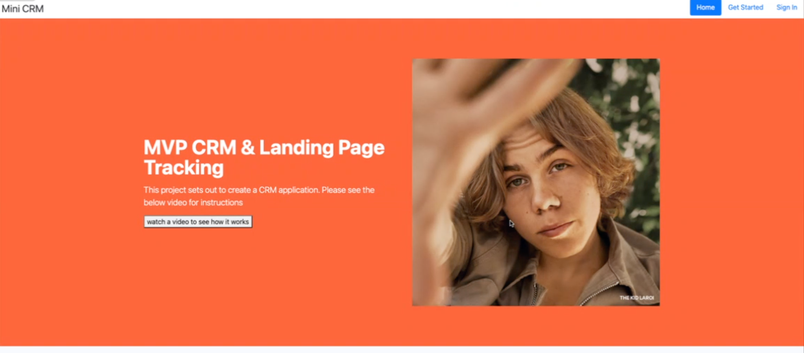

Mini CRM + Landing Page Tracking Tool
About
Micro CRM with marketing Identity managing feature. identity management system offers the ability to link visitor’ movements across different platforms, giving a holistic view of the user journey.
Stack
- HTML
- CSS
- Ruby on Rails
- PostgreSQL
- SQL
GitHub Links
GithubVideo Walkthrough
Watch VideoProject Details
I wanted to build a Ruby on Rails app with MVC architecture and data modeling.
Web Stack and Explanation
Build the application using Ruby on Rails. Managed related data through complex forms and RESTful routes. The goal of the application is to build an application with typical "Content Management System" domain model.
Problems and Thought Process
When a Contact visits a page and the tracking occurs in development the feed of the Contact persists however in production it had issues persisting so the feed would be empty. This was mainly due to Ahoy Gem that was used. Next version would be move from Ahoy to another gem for tracking with same functionality.